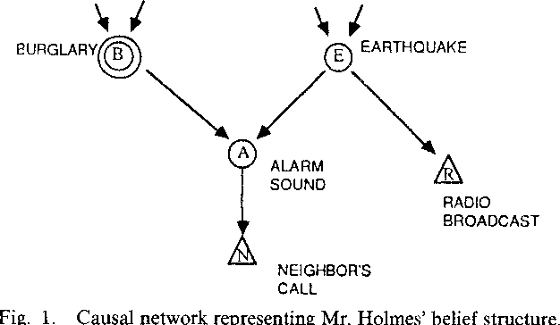
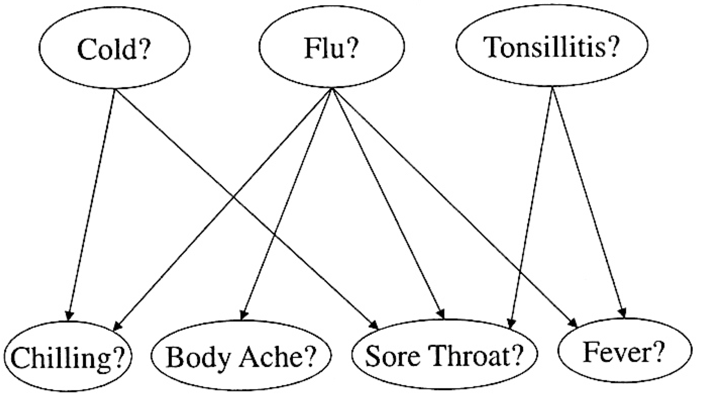
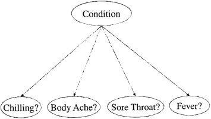
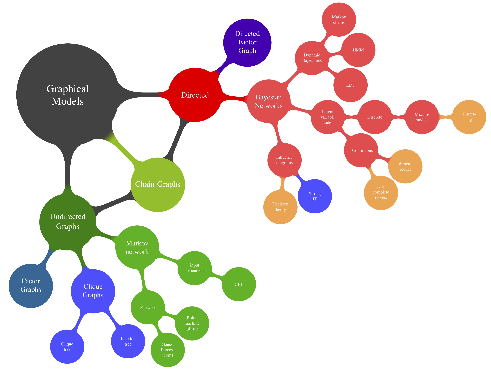
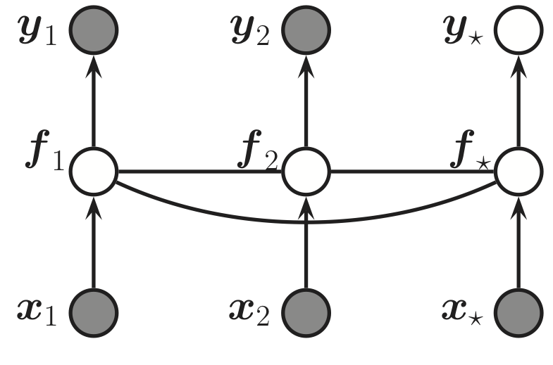
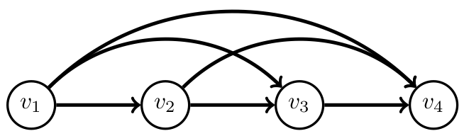
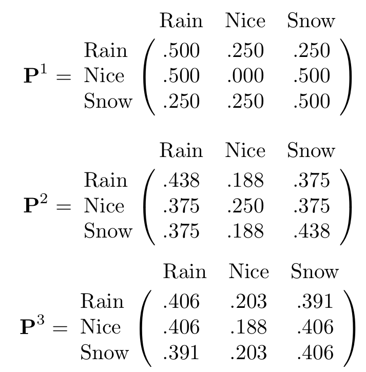
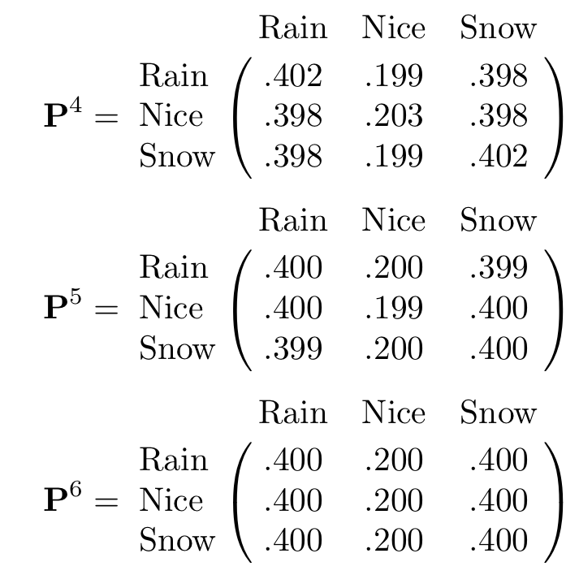
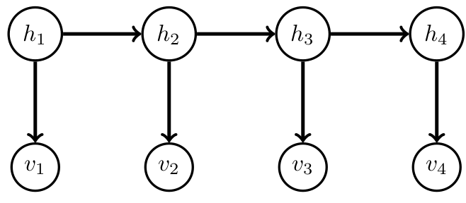

08 Markov Models
Advanced Machine Learning
Malte Schilling, Neuroinformatics Group, Bielefeld University
Graphical Models
Recap - Graphical Models
We can use graphs to represent interaction between objects.
Graphical Models combine Graph and Probability theory.
Many of the quantities that we would like to compute in a probability distribution can then be related to operations on the graph.
The computational complexity of operations can often be related to the structure of the graph.
Graphical Models are now used as a standard framework in Engineering, Statistics and Computer Science.
Recap - Belief Networks (Bayesian Networks)
A belief network is a directed acyclic graph in which each node has associated the conditional probability of the node given its parents.

The joint distribution is obtained by taking the product of the conditional probabilities:
\[ p(A, B, C, D, E) = p(A)p(B)p(C|A, B)p(D|C)p(E|B, C) \]
Example from (Barber 2012)
Example revisited
"I’m at work, neighbor John calls to say my burglar alarm is ringing. Sometimes it’s set off by minor earthquakes. John sometimes confuses the alarm with a phone ringing. Real earthquakes usually are reported on radio.This would increase my belief in the alarm triggering and in receiving John‘s call.“
Variables: Burglary,Earthquake,Alarm,Call,Radio
Network topology reflects believed causal structure of the domain:
- burglar and earthquake can set the alarm off
- alarm can cause John to call
- earthquake can cause a radio report
- plus some independence assumptions
Example revisited 2
- given Alarm, Call is cond. indep. of Earthquake, Burglary, Radio
- given Earthquake, Radio is cond. indep. of Alarm, Burglary, Call
- given Earthquake and Burglary, Alarm is cond. indep. of Radio
- given no descendant, Earthquake and Burglary are indep.

Example from (Pearl 2009)
Different Formalisms
Why do we want to have different types of representation formalisms?
- They have different advantages/disadvantages – so we usually have to consider a tradeoff.
In particular, we are always concerned with two questions:
constructing the model
drawing inference in a model
Individual models are differently specialized on these tasks – and as probabilistic inference easily gets quite expensive there are special models to deal with special types of inferences.
Reasoning with Bayesian networks
Bayesian Models.These are particular good in expressing directed dependencies and using causal explanations for those e.g. when dealing with causes and effects.
We can solve four general types of queries with Bayesian networks:
- prob. of evidence: How likely is a complete variable instantiation \(E\) ➔ \(p(E)=\)?
- prior and posterior marginals: How probable is an instantiation of a limited set of variables ➔ \(p(x_1,...,x_m)=\)? or \(p(x_1,...,x_m| E)=\)?
- most probable explanation (MPE): what is the most probable instantiation of all network variables given some evidence \(e\) ➔ \(\vec{x}\) with \(p(x_1,...,x_n|E)=max\)?
- maximum a posteriori hypoth. (MAP): what is the most probable instantiation of a subset of \(m (m<n)\) variables for some evidence \(E\) ➔ \(\vec{x}\) with \(p(x_1,...,x_m|E)=max\)?
Construction of a Bayesian
- define network variables and their values
- distinguish between query, evidence, and intermediary variables
- query and evidence variables usually determined from problem statement
- intermediary (a.k.a. hidden or latent) variables often less obvious
- define network structure
- for each var \(X\) answer the question: what set of variables are direct causes of \(X\)?
Construction of a Bayesian 2
- define network parameters (Conditional Probability Tables)
- difficulty and objectivity depend on problem and available data
- often assuming a distribution (model) and estimate parameters
Example: Constructing a Bayesian Network
"Flu is an acute disease characterized by fever, body aches, and pains, and can be associated with chilling and a sore throat.The cold is a bodily disorder popularly associated with chilling and can cause a soar throat. Tonsillitis is an inflammation of the tonsils that leads to a soar throat and can be associated with fever.“
Variables:
- query: flu,cold,tonsillitis
- evidence: chilling, body ache and pain, sore throat, fever
- intermediary: /
- values:{true,false}
Structure?
Example: Constructing a Bayesian Network

CPTs normally obtained from experts (subjective beliefs, empirical data)
- problem of parameter estimation
- Example: Given \(N\) patient records \(d_i\) , find parametrization \(\theta\) such that \(\prod_{i=1}^N p(d_i) = max\)
Example from (Pearl 2009)
Naive Bayes Structure
- class variable Condition ∈ {normal, cold, flu, tonsillitis}
- attributes Chilling, Body Ache, …
- single-fault assumption: only one cond. can hold at any time
- inconsistent with info: given Cond.=Cold, Fever and Sore Throat would become independent

Graphical Formalisms – Many different kinds

Graphical Models are graph based representations of various factorisation assumptions of distributions. These factorisations are typically equivalent to independence statements amongst (sets of) variables in the distribution.
From (Barber 2012)
Graphical Models
- Belief Network: Each factor is a conditional distribution. Generative models, AI, statistics. Corresponds to a DAG.
- Markov Network: Each factor corresponds to a potential (non negative function). Related to the strength of relationship between variables, but not directly related to dependence. Useful for collective phenomena such as image processing. Corresponds to an undirected graph.
- Chain Graph: A marriage of BNs and MNs. Contains both directed and undirected links.
- Factor Graph: A barebones representation of the factorisation of a distribution. Often used for efficient computation and deriving message passing algorithms.
Summary: Structured Probability Distributions
Not all probability densities can be well described by Gaussians.
Graphical models offer a way of working with structured PDFs that allow for computational simplification:
- A general PDF with \(k\) n-ary variables requires \(n^{k − 1}\) parameters for its complete specification.
- Graphical models allow to describe structured PDFs that require fewer parameters for the same number of variables.
- The scheme is based on a graph expressing dependencies among variables leading to a factorization of the PDF.
- The graph is formed by representing each variable of the PDF as a node receiving arrows from other variables (“causes”).
Summary - Bayes Net
Allows for concise specification of structured PDFs.
Bayes nets help to simplify the following basic learning tasks:
- inference: given values for some nodes in the graph, what is the PDF of the remaining nodes?
- parameter learning: factorized PDFs are parametrized and the task is to find optimal parameter values, given some data.
- model selection: parameter learning for competing graph structures – chooses model that gives the maximal likelihood.
- model inference: infer graphical model structure from given data. Usually requires additional constraints.
A Graphical Model for a Gaussian Process

A Gaussian process for 2 trainings and one test points, expressed as a graphical model representing \(p(\vec{y},\vec{f}|\vec{x}) = \mathcal{N}(\vec{f}|\vec{0},K(x)) \prod_i p(y_i|f_i)\). Hidden nodes represent the value of the function at each of the data points and they are fully interconnected by undirected edges, forming a Gaussian graphical model (if the test point \(x_∗\) is similar to the training, then the predicted output \(y_∗\) will be similar to \(y_1\) and \(y_2\)).
(Murphy 2012)
Relational Inductive Biases
Graphical models can represent complex joint distributions by making explicit random conditional independences among random variables.
Explicitly expressing the sparse dependencies among variables provides for various efficient inference and reasoning algorithms that exploit localities within the graphical model.
For learning: An inductive bias allows to prioritize one solution over others, independent of the observed data (Mitchell, 1980).
In a Bayesian model, inductive biases are typically expressed through the choice and parameterization of the prior distribution
(Battaglia et al. 2018)
Relational Inductive Biases for Neural Networks
(Battaglia et al. 2018)
Relational Inductive Biases for Neural Networks
| Component | Entities | Relations | Rel.Ind. Bias | Invariance |
|---|---|---|---|---|
| Fully connected | Units | All-to-all | Weak | / |
| Convolutional | Grid Elements | Local | Locality | Spatial translation |
| Recurrent | Timesteps. | Sequential | Sequentiality | Time translation |
| Graph network | Nodes. | Edges | Arbitrary | Node, edge permutations |
(Battaglia et al. 2018)
Markov Models
Time-Series Representation
As a special case: a time-series is an ordered sequence of elements (discrete or continuous):
\[ x_{a:b} = \{x_a, x_{a+1}, ..., x_b\} \]
We are interested in the probability of a time series for a given model:
\[ p(v_{1:T}) = \prod_{t=1}^T p(v_t | v_{1:t-1} ) \ \text{with } p(v_1) \text{ given}. \]
Markov model
Markov models represent how much current data depends on data from the past.

Independence Assumption
It is often natural to assume that the influence of the immediate past is more relevant than the remote past and in Markov models only a limited number of previous observations are required to predict the future.
(Barber 2012)
Markov Chain
In a Markov Chain, only the recent past is considered (\(L\) is the order of the Markov chain):
\[ p(v_t | v_1, ..., v_{t-1}) = p(v_t | v_{t-L}, ..., v_{t-1}) \]
The joint probability of a time series can now be expressed as a first order Markov chain: \[ p(v_{1:T}) = p(v_1) p( v_2 | v_1) ... p(v_T | v_{T-1}) \]
A chain is called stationary when the transitions between states are time-independent, i.e. \(p(v_t =s'| v_{t-1} = s)\) is equal to a function \(f(s, s')\).
(Barber 2012)
Markov Models as Statistical Language Models
Markov Models are widely used to represent probability distributions over sequences of letters or words.
The state space is then defined as all the words in a language.
N-gram Models represent probability distributions:
- Unigram statistics represent the prior of a word \(p(x_t = k)\).
- Bigram model equals a first-order Markov model: \(p(x_t = k| x_{t−1} = j)\) and represents the probability for transitioning from \(j\) to \(k\).
- N-gram models in general condition this transition on a longer history: \(p(x_t = k| x_{t−1} = j, ... x_{t−N} = i)\)
Markov Models as Statistical Language Models
Such Language Models are used:
- Sentence completion: predict the next word given the previous words in a sentence.
- Data compression Any density model can be used to define an encoding scheme, by assigning short codewords to more probable strings. The more accurate the predictive model, the fewer the number of bits it requires to store the data.
- Text classification: Any density model can be used as a class-conditional density and hence turned into a (generative) classifier. A 0-gram class-conditional density (i.e., only unigram statistics) would be equivalent to a naive Bayes classifier.
- Automatic essay writing: One can sample from \(p(x_{1:t})\) to generate artificial text.
(Murphy 2012)
Example: Automated essay writing
Automated generation of text allows to assess the quality of the model.
Example output from an 4-gram word model (trained on the Broadcast News corpus with 400 million words). First 4 words are specified by hand, the model generates the following text:
SAYS IT’S NOT IN THE CARDS LEGENDARY RECONNAISSANCE BY ROLLIE DEMOCRACIES UNSUSTAINABLE COULD STRIKE REDLINING VISITS TO PROFIT BOOKING WAIT HERE AT MADISON SQUARE GARDEN COUNTY COURTHOUSE WHERE HE HAD BEEN DONE IN THREE ALREADY IN ANY WAY IN WHICH A TEACHER
(Murphy 2012)
Transition Matrix
A first-order (stationary) Markov chain is described by a transition matrix - for each state there is a probability to stay in that state or to transition into a state.
This is often as well visualized as a graph and is equivalent to a stochastic automaton.
(Murphy 2012)
Example: Transition Matrix of Weather in the Land Oz
- There are never two nice days in a row.
- After a nice day, it is as likely to have snow as rain the next day.
- After snow or rain, there is an even chance of having the same the next day or switch to one of the others.
\[ \mathbf{P(\text{Rain - Nice - Snow})} = \left( \begin{array}{ccc} 0.5 & 0.25 & 0.25 \\ 0.5 & 0. & 0.5 \\ 0.25 & 0.25 & 0.5 \end{array} \right) \]
(Grinstead and Snell 2003)
Fitting a Markov Model – Learning Transition Matrix
Fitting a first-order stationary Markov chain by Maximum Likelihood corresponds to setting the transitions by counting the number of observed transitions in the sequence:
\[ p_{ij} = p(v_t = j | v_{t-1} = i) \propto \sum_{t=2}^T \mathbb{I} [v_t = j, v_{t-1}=i] \]
For a set of time-series \(v^n_{1:T_n}, n = 1,...,N\) the transition is given by counting all transitions across time and all data points.
Example: Unigram and Bigram Counts for Letters
(MacKay 2003)
Equilibrium Distribution
For a given Markov Chain, it is interesting to consider how the marginal probability changes over time. We might be interested in the probability of being in a specific state:
\[ p(x_t = i) = \sum_j \underbrace{p(x_t = i | x_{t-1} = j)}_{P_{ij}}p(x_{t-1} = j) \]
When repeatedly sampling new states this leads to a probability distribution over all states: \[ \vec{p}_t = \mathbf{P}^{t-1} p(x_1) \]
If, for \(t \rightarrow \infty\), \(\vec{p}_\infty\) is independent of the initial distribution \(p(x_1)\), then \(p_\infty\) is called the equilibrium distribution of the chain.
Example: Weather in the Land Oz
Long term weather in Oz: Powers of the Land of Oz transition matrix.


(Grinstead and Snell 2003)
Example Application: PageRank Algorithm for Websites
We define a Matrix that reflects connections between webpages: \(A_{ij}\) is set to \(1\) if website \(j\) has a hyperlink to \(i\) and it is set to \(0\) otherwise.
From this, we setup a Markov transition matrix with the elements:
\[ P_{ij} = \frac{A_{ij}}{\sum_{i'}A_{i'j}} \]
- When jumping from website to website, the equilibrium distribution component \(p_\infty (i)\) is the relative number of times we will visit website i. This can be interpreted as the ‘importance’ of website \(i\).
- For each website \(i\): collect a list of associated words associated with that website is collected. From this one can construct an inverse list for searching the web ranked by this importance.
(Barber 2012)
Hidden Markov Model
- Even a second-order Markov assumption might not be sufficient to represent long-range temporal dependencies.
- But for higher order models the number of parameters will blow up.
- As an alternative: we assume an underlying hidden process that can be modeled by a first-order Markov chain, but the observation of the data is disturbed by noise.
- Such a model is known as a Hidden Markov Model.

(Barber 2012)
Hidden Markov Model
A HMM defines a Markov chain on hidden/ latent variables \(h_{1:T}\). The observed/ visible variables are dependent on the hidden variables through an emission probabilitu \(p(v_t|h_t)\). This defines a joint distribution
\[ p(h_{1:T}, v_{1:T}) = p(v_1 | h_1) p(h_1) \prod_{t=2}^T p(v_t|h_t) p(h_t | h_{t-1}) \]
For a stationary HMM the transition and emission probability distributions don’t change over time.
(Barber 2012)
Hidden Markov Model Parameters
Transition Distribution
THe transition distribution represents the probabilities of transitioning from one hidden state to another – this results in an \(H \times H\) transition matrix.
Emission Distribution
The emission distribution \(p(v_t | h_t)\) describes in a matrix for each of the hidden states the probability of emitting one of \(V\) observations. This results in a \(V \times H\) matrix.
Application of Hidden Markov Models
- HMMs can represent long-range dependencies between observations (in contrast to other Markov models) – importantly, the Markov property is not assumed for the observations themselves.
- Therefore, HMMs are widely used as models on sequences.
- For example, as complete black-box models for time-series prediction.
- But more often, hidden states are associated with some given temporal structure and meaning.
Application of Hidden Markov Models
- Automatic speech recognition: Observations represent features of the speech signal, and the hidden states represent the spoken word. The transition model represents a given language model, and the observation model represents an acoustic model.
- Activity recognition: Observations represent features directly extracted from a video frame. The hidden state is an activity class the person was engaged in (e.g., running, walking, sitting, etc.).
(Murphy 2012)
References
Barber, David. 2012. Bayesian Reasoning and Machine Learning. New York, NY, USA: Cambridge University Press.
Battaglia, Peter, Jessica Blake Chandler Hamrick, Victor Bapst, Alvaro Sanchez, Vinicius Zambaldi, Mateusz Malinowski, Andrea Tacchetti, et al. 2018. “Relational Inductive Biases, Deep Learning, and Graph Networks.” arXiv. https://arxiv.org/pdf/1806.01261.pdf.
Grinstead, Charles M., and J. Laurie Snell. 2003. Introduction to Probability. AMS; AMS.
MacKay, David J. C. 2003. Information Theory, Inference, and Learning Algorithms. Copyright Cambridge University Press.
Murphy, Kevin P. 2012. Machine Learning: A Probabilistic Perspective. The MIT Press.
Pearl, Judea. 2009. Causality: Models, Reasoning and Inference. 2nd ed. New York, NY, USA: Cambridge University Press.